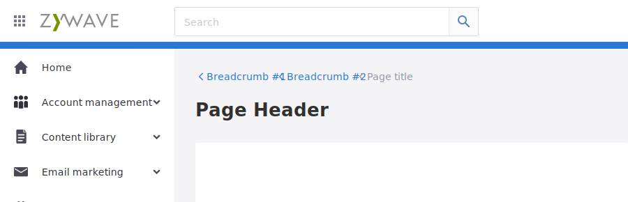
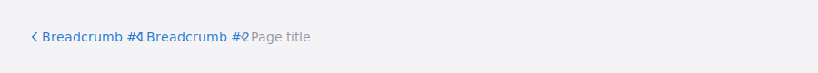
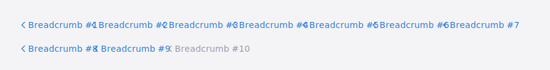
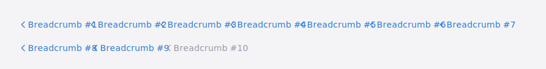
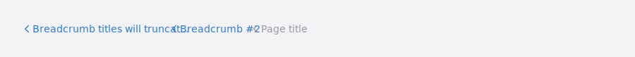
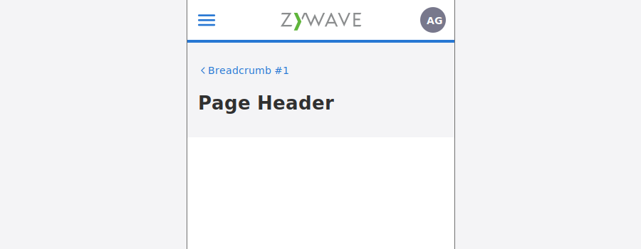

Breadcrumbs
Hansel and Gretel would be proud
What are breadcrumbs
Use breadcrumbs as a form of secondary navigation, to aid the primary navigation, when sites hierarchies get 3 or more levels deep. Breadcrumbs give users context so they don’t feel lost, even when they are deep inside large, nested content. The breadcrumb links also allow users to backtrack through a deep navigation as far as they need to without having to start over.

Why use breadcrumbs
- Simple, efficient, easy navigation within the application
- Fast navigation, one-click access to get to a higher-level page which helps users quickly get where they need to, even when they make mistakes
- Tells the user their location, helping them understand where they are in relation to the rest of the site

Using breadcrumbs
For technical specs, see the specs page
- Breadcrumbs are always left-aligned and appear 30px below the page header and 20px above the page title
- Breadcrumbs should be styled like text links, but without the underline: 14px font size
- Use left arrows — not slashes or vertical lines — to imply movement between pages or point back home
- The current page should be included and clickable, but styled to look disabled
- When there are many pages in a breadcrumb trail, you may need to use an ellipsis to hide some of the crumbs. We recommend considering an ellipsis with 5 or more links in the breadcrumb trail. The ellipsis is clickable and will expand to reveal the hidden pages when clicked. In long breadcrumb trails, the breadcrumbs will stack when fully expanded, and that’s ok.
 

Naming
- Breadcrumb titles will truncate after 30 characters
- We recommend keeping breadcrumb titles to 30 characters or less, especially in longer trails, but leave the length up to the consumer.

Mobile
On mobile devices space is at a premium, use a single breadcrumb, pointing back one level. Since space is at such a premium on mobile applicatons, the cost of using breadcrumbs can quickly overwhelm the benefits. Keeping it simple, by using a single breadcrumb, avoids potential issues with wrapping multiple breadcrumbs or using breadcrumbs that are too small or crowded.

Table of Contents
ZuiBreadcrumbs
Extends ZuiBaseElement
Pass
ZuiBreadcrumb
Extends ZuiBaseElement